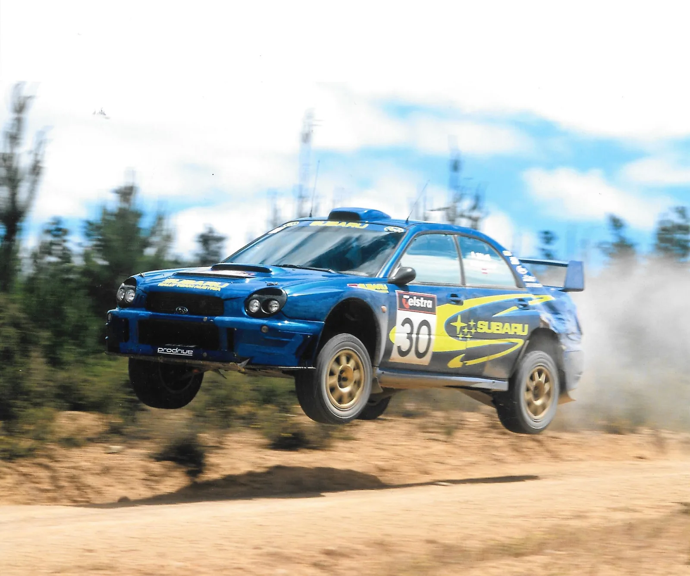
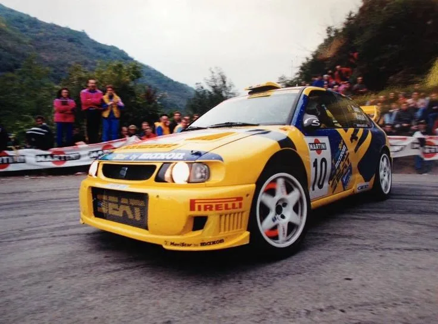
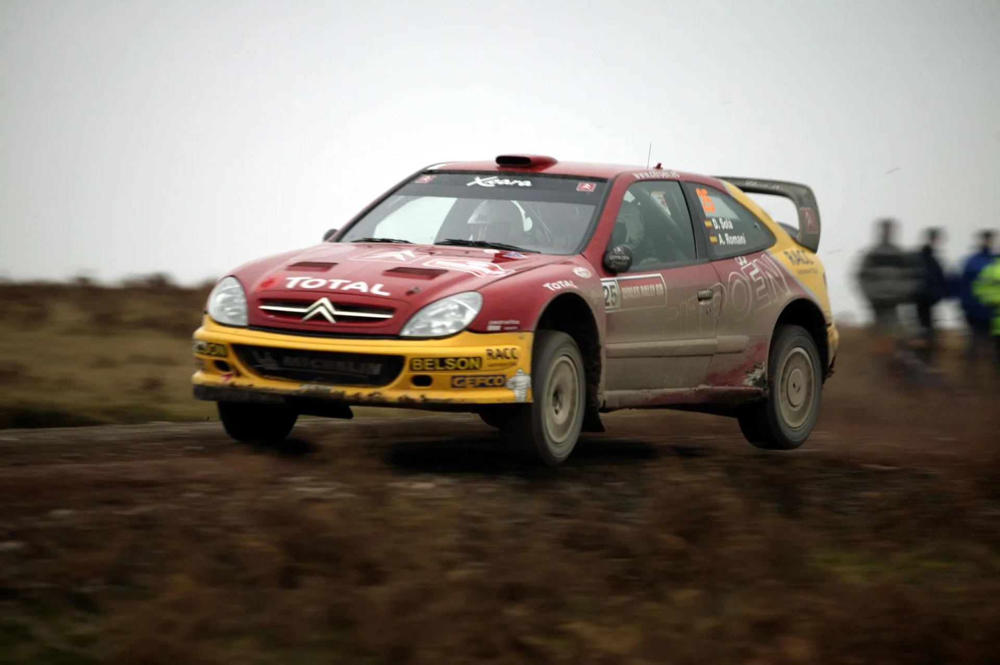
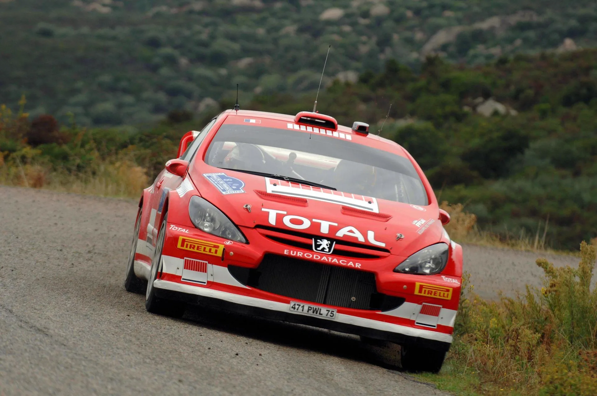
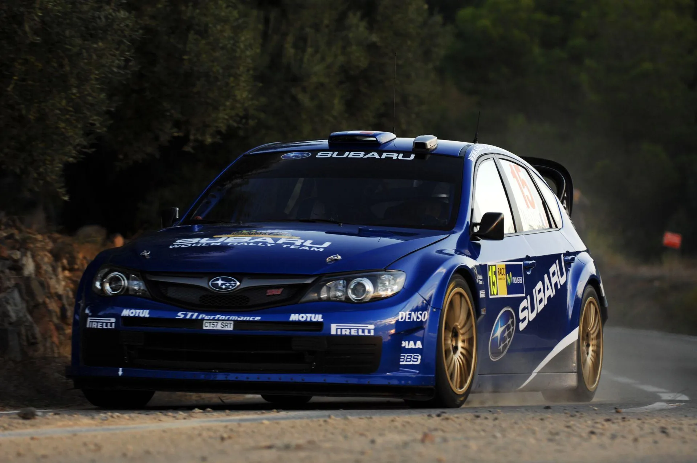
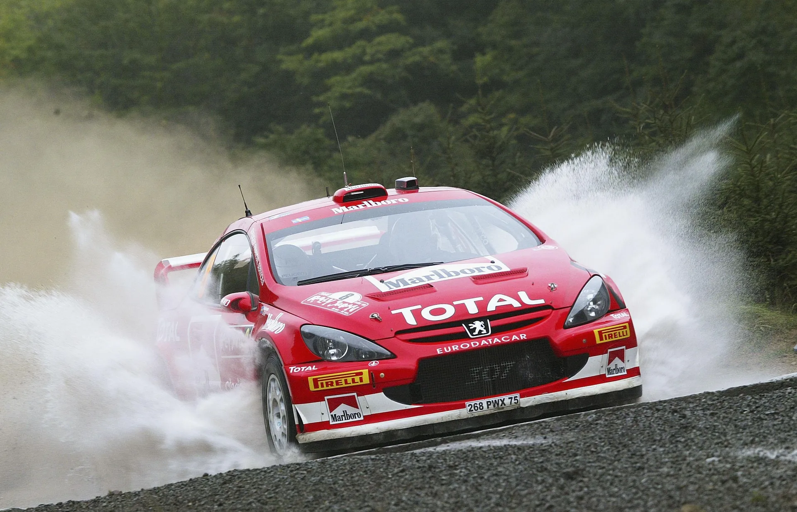
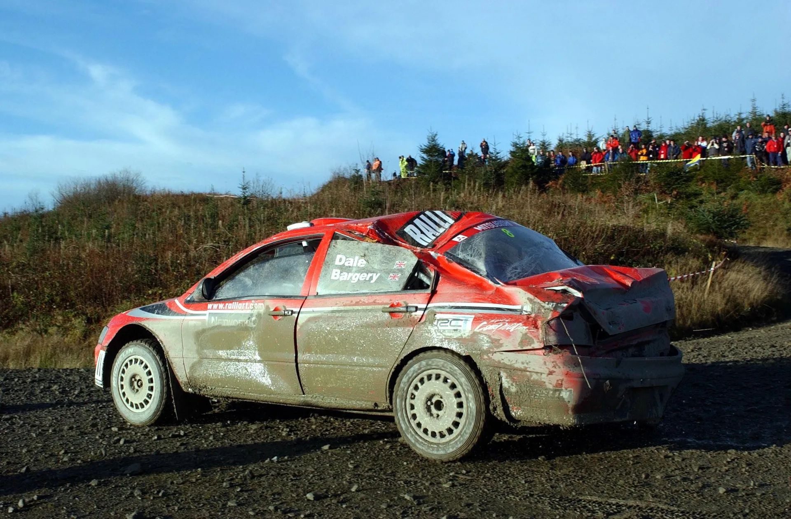
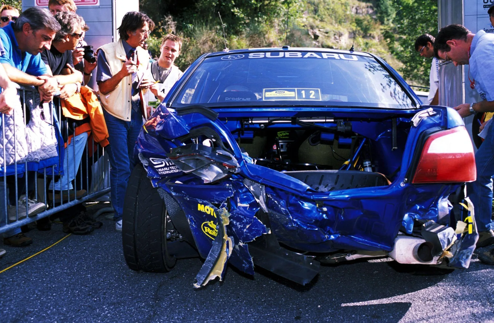

Seven Forgotten Factory Outings
Back in the day, the WRC had so many teams that it was easy to forget who drove for whom. From late replacements and hot-shots who never materialised to test drivers and absolute unknowns, here are seven forgotten factory outings by WRC drivers.
7. Marc Duez - Seat 1998

Belgian veteran Marc Duez was selected by Seat as their development driver on tarmac for their all-new Cordoba WRC.
Duez had experience in both rallying and circuit racing, having won the Belgian Rally Championship three times before, as well as having 24h of Nürburgring and 24h of Spa victories alongside three podium finishes in the 24 Hours of Le Mans at the time. The Belgian had last competed in the WRC in 1991 in a Bastos-liveried Toyota Celica. For 1998, Duez would help Seat with the development of their Ibiza Kit Car and Cordoba WRC. Duez was selected by the team to compete in two WRC rallies in 1998, namely Sanremo and Australia. In Sanremo, Duez, who had helped set-up the car for the surface with testing sessions at the Calafat circuit in Spain before the rally, would finish in 16th, more than 2s/km slower than eventual winner Tommi Mäkinen. He was however faster than teammate Harri Rovanperä before the Finn's crash on SS3.
In Australia, Duez would crash-out of the rally from 18th on Saturday, running behind the top-2 in the Group N class.
Having fulfilled his duties as a test-driver, Duez went on to win Rallye Monte-Carlo in the Group N class the following season, while also racking up more wins in the 24h races of Nürburgring and Spa, as well as a 2nd place finish in the 1999 24h of Le Mans.
6. Dani Solà - Citroën 2003

2002 JWRC Champion Dani Solà would compete in a couple of outings in a factory-entered Citroën Xsara WRC the following season, alongside his PWRC campaign. Having secured the JWRC title in a Citroën Saxo Super 1600, the Spaniard was given an opportunity to step up to the top category, making his debut at the Acropolis Rally, where he finished 12th after a trouble-free run. Solà had hoped to contest a second event at either Sanremo or Catalunya, but Citroën instead allocated a third Xsara to long-time team driver Philippe Bugalski. Solà eventually returned to the car for Wales Rally GB, where he retired from 11th place following a fire in his Xsara.
Solà did not impress Citroën enough for a campaign in the Xsara for 2004. Instead, Solà continued with Mitsubishi, with whom he had already competed in the PWRC during 2003, recording a best finish of sixth across three appearances. In 2005, he stepped up to a Ford Focus RS WRC prepared by M-Sport, but following a crash-filled campaign, Solà would never compete in another WRC event in a World Rally Car.
5. Nicolas Bernardi - Peugeot 2005

Nicolas Bernardi was drafted in as a replacement for Markko Märtin for the last two tarmac rallies of the season. The Frenchman, who had finished as a runner-up in JWRC in the 2004 season, had won the French Tarmac championship in a Bozian Racing entered 206 WRC, while also competing in Germany and Wales in the WRC with the same car. Bernardi would be decent in both rallies he competed with in the 307 WRC, finishing 8th in Corsica and 6th in Catalunya, being less than a second per kilometer slower than Sébastien Loeb in both rallies.
Bernardi was however, slower than some other drivers of arguably lesser caliber, at least based on his car and tarmac expertise, like Alexandre Bengué in the Fabia and Xevi Pons in the Xsara.
Peugeot's withdrawal at the end of the season would mean that Bernardi would never have another real shot at the WRC after that, with his only WRC following these two rallies being in a Suzuki SX4 WRC in Corsica in 2007.
4. Brice Tirabassi - Subaru 2008

Towards the end of the 2008 WRC season, Subaru were looking to enter a third car in the tarmac rounds of Catalunya and Corsica, to help develop the S14 WRC Impreza, that had made its debut in Acropolis earlier in the year. Subaru's test driver, Markko Märtin, had amassed decent mileage with the car on tarmac, but quite understandably, the Estonian was not interested in competing in a WRC rally following the passing of Michael Park at the end of the 2005 season.
Subaru turned to the 2003 JWRC champion Brice Tirabassi instead, with the Frenchman having competed with a Subaru in the 2005 PWRC season, winning the Cyprus Rally. Tirabassi had not driven the car before and planned to use Catalunya as an opportunity to better understand the new car, before attacking more in Corsica.
Tirabassi finished 10th in Catalunya, and was running in 8th in Corsica, before suffering an engine failure following the first stage of Sunday. In general, the Frenchman was not setting the world alight with his pace, being very close to Matthew Wilson in both rallies, while being considerably slower than both his teammates. He would never compete in the WRC again.
3. Daniel Carlsson - Peugeot 2004 & 2005

Daniel Carlsson drove a total of four rallies with Peugeot's factory team in the 2004 and 2005 seasons. The Swede, who finished third in the 2003 JWRC, first attracted Peugeot’s attention after winning the Finnish round of the championship that year. In 2004, Carlsson contested selected WRC rounds in a Bozian Racing-entered Peugeot 206 WRC, securing a top-five finish at the Acropolis Rally and eighth-place finishes in both Sweden and New Zealand.
Carlsson signed a contract with the Peugeot team for the 2005 season before Wales Rally GB, enabling the Swede to compete with the factory team in select rounds the following season. To celebrate his performances in 2004, Peugeot gave him the opportunity to enter Rally GB in a factory 307 WRC. Carlsson would crash out of the rally from 9th on SS6.
For 2005, Carlsson would start his campaign on a high note, finishing 6th in Sweden in the 307, having run as high as 3rd on Friday, before falling back with a broken suspension, while also winning two stages on Sunday. The Swede would not get a chance to enter a rally with the factory team for a significant portion of the season, being loaned out to the Olsbergs Subaru team for the rough gravel rounds of Sardinia, Turkey and Greece. Carlsson would get the chance to return to the factory team for the last two gravel rounds of the season, following the passing of Michael Park. The Swede would finish in 8th place in Japan, being more than 1s/km of the pace of teammate Marcus Grönholm. Australia would not be better, as Carlsson would wreck his 307 WRC on the first proper stage of the rally, with his car being engulfed into flames following the incident.
Carlsson would go on to achieve the best result of his career at the 2006 Swedish Rally, finishing third in a Mitsubishi Lancer WRC. He returned to Sweden in 2007 with the OMV Kronos Citroën team, driving a Citroën Xsara WRC. He made an impressive start to the season, finishing fifth at his home rally before finishing seventh in Norway, sixth in Portugal and sixth in Argentina. However, his season was cut short after he was caught drink-driving in Sweden and lost his driving license. The incident brought and end to his rallying career.
2. Justin Dale - Mitsubishi 2002

Alister McRae's mountain biking accident towards the tail end of the 2002 season left him with a severely bruised liver, and Mitsubishi with only François Delecour and Jani Paasonen in the #7 and #9 cars for Rally New Zealand and Rally Australia. For the season finale, Mitsubishi entrusted the vacant #8 car to Justin Dale. The 31 year old had finished 2nd in the British Rally Championship that year, driving a Peugeot 206 S1600, finishing only behind Jonny Milner, who was driving a Corolla WRC.
Dale was eager to make his WRC debut in the 2002 season finale, having tested a privateer Subaru before Mitsubishi offered him a last-minute drive. The Brit had also completed testing work for the Japanese manufacturer earlier that year, making him a natural choice to step in.
Dale’s debut would come to an early end on SS3, when the Mitsubishi driver slid off the road and rolled his Lancer into a tree. Although he managed to make it back to service, there was damage to the car’s roll cage, forcing him to retire.
Dale would compete in two rallies with Hyundai in 2003, with a highest finish of 28th in Rallye Deutschland. He would not get to compete in the WRC's top class after that.
1. Achim Mörtl - Subaru 2002

Achim Mörtl was selected by Subaru as a tarmac specialist for the 2002 season's Rallye Deutschland and Sanremo Rallies. Mörtl had competed with Subaru's B team in 2001, before switching to a 206 WRC entered by Griffone for 2002. Despite only having a best finish of 14th that season, Subaru elected to bring him back, this time to the factory team for two rounds, with then Subaru team-principal David Lapworth saying there could be more to come if the Austrian performed well.
Mörtl was nominated for manufacturer points in both rallies. In Germany, the Austrian would lose a wheel on the first corner of the rally after hitting a curb at high-speed, before ripping another wheel of his Impreza, after hitting a Hinkelstein on the first stage on Saturday. Then in Sanremo, Mörtl would damage his car on the second stage of Saturday, and then would lose control and slide rear-first into a bridge. The Austrian reported double vision after the impact, so Subaru withdrew him on medical grounds.
Understandably, Subaru would not employ him in any further rounds, with Sanremo being the Austrian's last WRC entry.
Comments